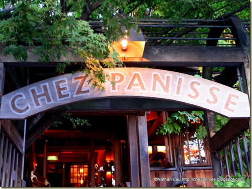
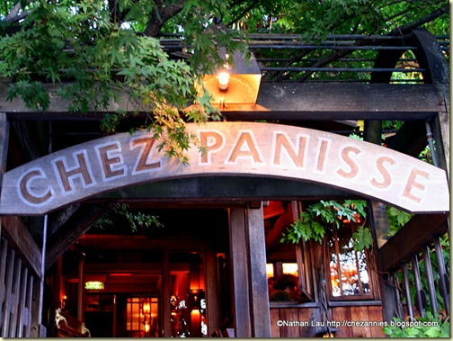
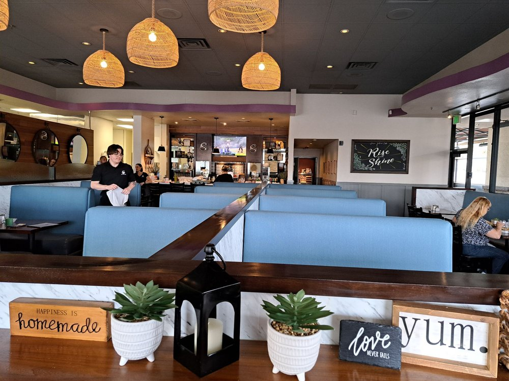
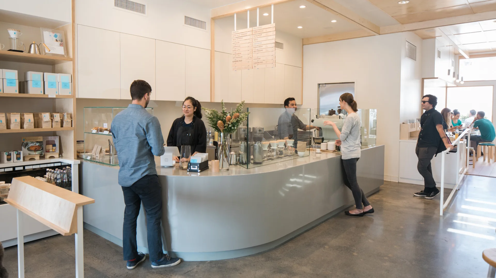
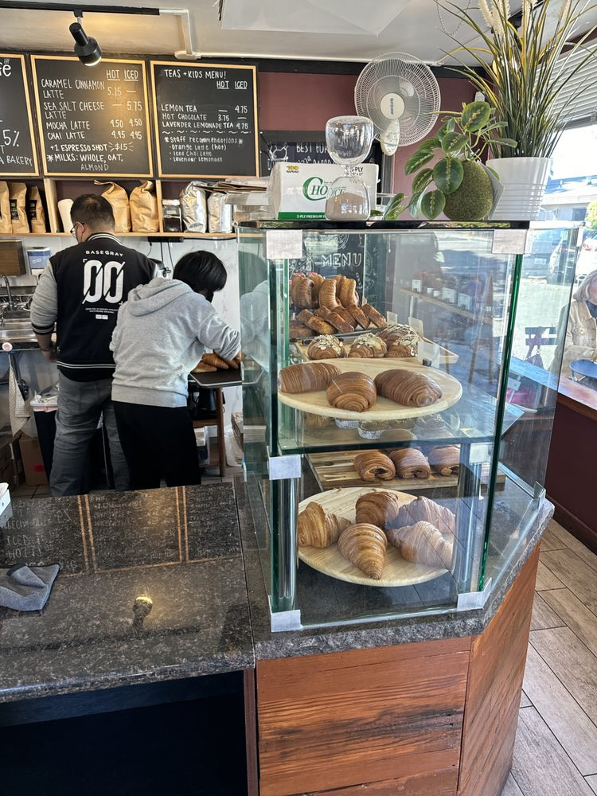
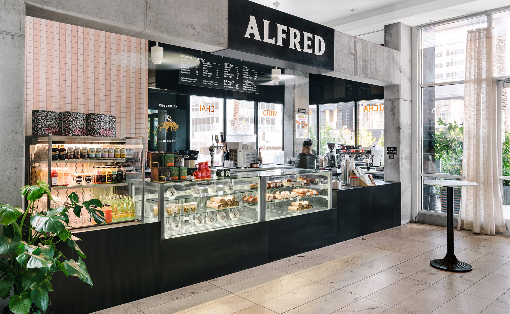
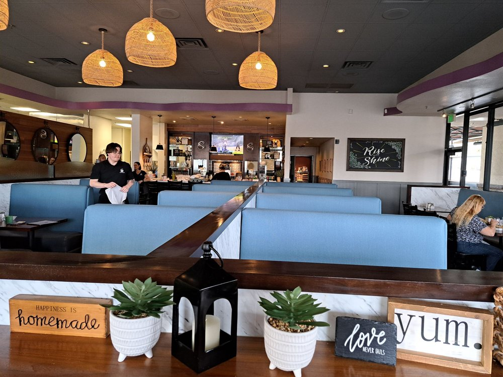
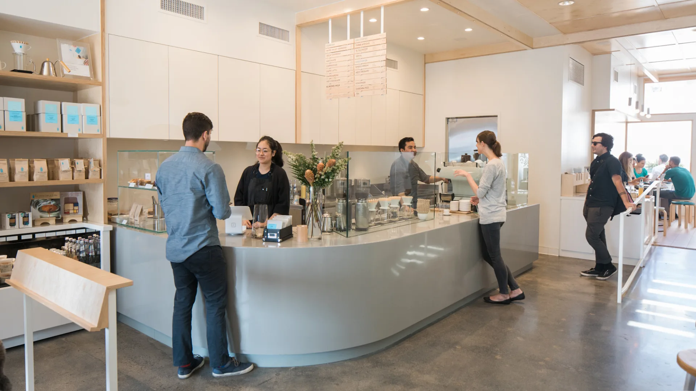
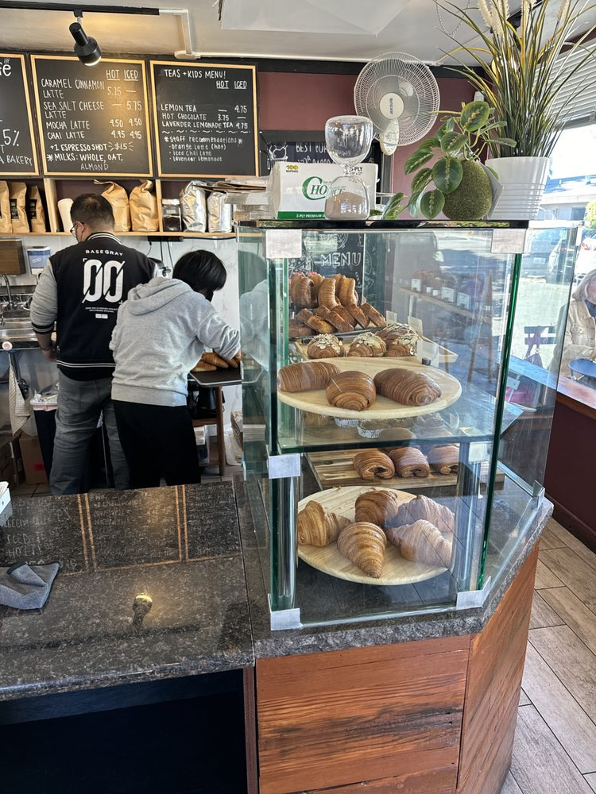
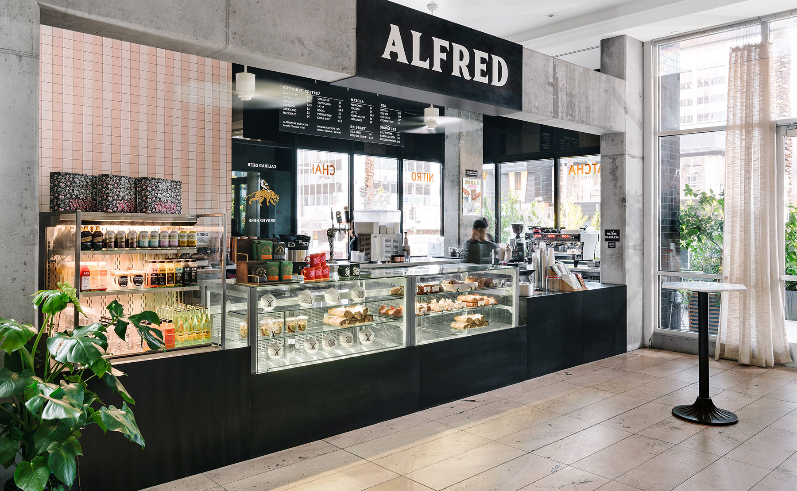

Discover California
From Los Angeles to Yosemite, California is full of diversity and adventure. Explore our site to learn more!

The Golden State – Land of beaches, mountains, and dreams.
From Los Angeles to Yosemite, California is full of diversity and adventure. Explore our site to learn more!
California is known for its diverse and vibrant food scene, influenced by its multicultural population and abundant agricultural resources. Here are some popular foods and drinks associated with California:
A pioneering farm-to-table restaurant founded by Alice Waters, known for its seasonal and locally sourced menu.
Opening hours are 11:30 AM to 10:30 PM, Tuesday to Saturday with Sunday and Monday being closed.
The menu changes daily, and that reflects the seasons produce. This is in the main resturant located downstairs. Upstairs there is a more casual cafe that offers a Al La Carte menu at a lower price.
Prices range from a variety of ranges with items such as the 3 course meal starting at 135 USD with wine pairing options available for another 75 USD.
A trendy spot known for its wood-fired pizzas, small plates, and vibrant atmosphere.
Opening hours are from 8 PM to 11 PM.
The menu consists of dishes containing seasonal ingredients, and having a special breakfast menu that consists of various common breakfast items at a low price.
Price ranges run from 31 to 50 USD during dinner hours, and reservations are needed for seating.
A world-renowned fine dining establishment in Napa Valley, offering an exquisite tasting menu.
Opening hours are from 4 pm to 8 pm every day.
The menu changes daily and similar to the others reflect the seasons produce.
This is the most expensive resturant of the list with it being 300-350 USD per person. So if you want an expensive delicious meal, you know where to go.
A unique restaurant serving creative small plates with a focus on seasonal ingredients.
Opening hours are from 5:30 PM to 10 PM every day, but Friday and Saturday close at 10:30 PM.
The menu contains a lot of common American dishes, such as pancakes and other items such as burgers, various desserts and beverages.
When it comes to price the base cost of a meal is around 50 USD, but depending on how hungry and many you are it drastically increases.
Family owned cafe focused on breakfast and lunch, while also providing organic coffee and a lively atmosphere
Opening hours are 6:30 AM to 3 PM everyday, but Tuesday because they are closed.
The cafe specialises in american breakfast and lunch dishes with items made from scratch and mostly homemade. This is therefore heavily reflected in the menu.
Since this is a cafe, prices are much lower. The average breakfast with coffee for one is around 15-18 USD.
A popular coffee chain known for its high-quality, single-origin coffee and minimalist aesthetic.
Opening hours vary by location, but most are open from 7 AM to 7 PM.
The menu focuses on coffee and espresso drinks, along with a selection of pastries and light snacks.
Prices for coffee drinks typically range from 3 to 6 USD, with pastries and snacks adding a few more dollars.
A cozy coffee shop that specializes in homemade goods.
Opening hours are from 8 AM until they are "sold out" as they like to put it.
The menu consists of various pastries like buns, croissants, and cookies, all made from scratch, as well as a variety of coffee.
Prices are quite reasonable, with most pastries ranging from 2 to 5 USD.
A trendy coffee shop known for its stylish decor and high-quality coffee.
Opening hours vary by location, but most are open from 7 AM to 5 PM.
The menu features a variety of coffee drinks, teas, and light snacks, with an emphasis on quality ingredients and presentation.
This is a more expensive shop in difference to a lot of the others, with prices here being from 6 to 12 USD.
 

 






